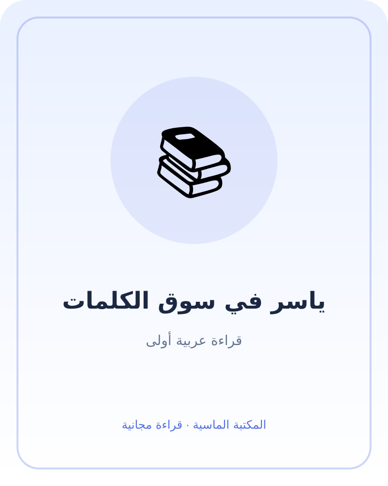

ياسر في سوق الكلمات
كتاب قراءة مبسّط للأطفال: كلمات عربية مألوفة، جمل قصيرة، وأسئلة وأنشطة لغوية صغيرة.
صباح في السوق
ذهب ياسر مع أمه إلى السوق. قال: «أرى بابًا كبيرًا وسلة صغيرة». سألته أمه: «ما لون السلة؟». قال: «السلة حمراء».
تفاح وتفاحة
اختار ياسر تفاحة. عدّها: واحدة. ثم رأى ثلاث تفاحات في السلة. قال: «تفاحة حمراء، وتفاحات كثيرة».
خبز دافئ
اشترت أمه خبزًا. شم ياسر رائحته وقال: «الخبز دافئ». وضعته أمه في كيس، وحمله ياسر بيديه الصغيرتين بحذر.
ماء بارد
شعر ياسر بالعطش. أعطته أمه زجاجة ماء باردة. شرب قليلًا وقال: «شكرًا يا أمي». ابتسمت أمه وقالت: «العفو يا ياسر».
قطة عند الباب
رأى ياسر قطة رمادية قرب الباب. لم يلمسها، بل سأل أمه أولًا. قالت: «نراقبها من بعيد وندع لها مساحة». قالت القطة: «مياو» في خيال ياسر، فضحك.
حقيبة الكلمات
في البيت، رسم ياسر ما رآه: باب، سلة، تفاحة، خبز، ماء، قطة. اختار كلمة «شكرًا» وكتبها بمساعدة أمه. قال: «أحب الكلمات، فهي تساعدني أن ألاحظ وأحكي».
أسئلة وأنشطة
- ما الأشياء التي رآها ياسر في السوق؟
- اختر كلمة جديدة وأخبر أحد أفراد الأسرة بجملة عنها.
- ارسم شيئًا من القصة واكتب اسمه بمساعدة شخص كبير.